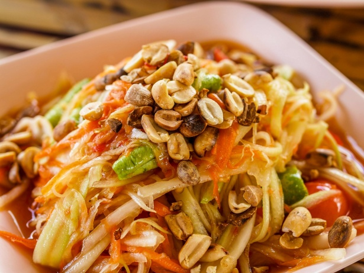

Som Tum

Som Tum has many interpretations in each region. But since every recipe has been in the Middle region so far, we shall keep the pattern
Ingredients
- Garlics
- Thai chillies
- Palm sugar
- Fish sauce
- Lime juice
- Tamarind paste
- Roasted peanuts
- Papaya
- Tomatoes
- Thai olive (optional)
Cooking
- Prepare the papaya by slicing it into little noodle-ish for crunchy bites
- Put garlic and palm sugar in the mortar and pound them until they become paste-like texture
- Put fish sauce, lime juice, and tamarind paste until it tastes good for you
- Add tomatoes and pound it until some juice come out. Do not pound too much, we only want the juice to mix in but still keep the crunchy texture of the tomatoes
- Add papaya and chillies then mix them well in the
- Add peanuts in the end to garnish and, optional, chillies
Home